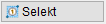
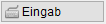
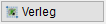

")
Erzeugen einer Stahlliste für ausgewählte Positionen, z. B. für den Fall von Nachträgen. Die Stahlliste kann auf der Zeichnung abgelegt, gedruckt oder im PDF-Format ausgegeben werden.
Sie können Listen aus Rundstählen, Formmatten, Flächenmatten (auch Listenmatten), U-Körben (Texte), Dübelleisten und Einbauteilen erstellen.
So wird's gemacht:
§Wählen Sie im Funktionsbereich eine Selektionsmethode:
 |
Auswahl von Auszugs- und Einbauteiltexten über Einzel- oder Rahmenauswahl. §Ziehen Sie einen Rahmen durch das Anklicken von zwei Punkten um die Bereiche, in denen die Texte liegen. [1.Punkt/Auszugstext; 2.Punkt]. Sie können auch einzelne Auszugstexte nacheinander anklicken. Um mehrere Auszüge wieder abzuwählen, klicken Sie im unteren Funktionsbereich auf Entfer und ziehen Sie einen Rahmen um die entsprechende Teilzeichnung oder klicken Sie einzelne Elemente an. Sie können auch die Umschalt-Taste gedrückt halten, um Entfer zu aktivieren. §Beenden Sie die Eingaben mit Rechtsklick. |
 |
Auswahl von Positionen über die Eingabe der Positionsnummer. Die Eingaben unterscheiden Rundstahl- und Flächenmattenpositionen. §Geben Sie zwischen der Anfangs- und Endzahl eines Positionsbereiches einen Bindestrich ein. Trennen Sie einzelne Positionen oder Positionsbereiche durch ein Komma. Bestätigen Sie mit der Eingabetaste. §Falls bei Rundstahl oder Matten keine Eingabe erfolgen soll, müssen Sie entweder die Positionsnummern aus der Eingabe entfernen oder "0" oder "-" (Minus) eingeben. §Bestätigen Sie die Auswahl mit der Eingabetaste oder Rechtsklick. [OK?]. Wenn Sie Ihre Eingaben für Rundstahl und Matten korrigieren möchten, klicken Sie auf Nein. Alternativ: Mit Bst in der unteren Menüleiste gelangen Sie bei Bedarf zur vorherigen Abfrage und können Ihre Eingabe ändern. Ausgewählt werden die Position 2, die Positionen 6 bis 9 und die Position 12. Alle übrigen Positionen werden ignoriert. |
 |
Auswahl von Verlegungen und Einbauteilen über Einzel- oder Rahmenauswahl. ·Die Stahlliste wird aus den Positionen der ausgewählten Verlegungen mit der rechnerischen Anzahl der gesammelten Verlegung zusammengestellt. Die Anzahl setzt sich aus Bauteilfaktor*Verlegefaktor*Anzahl zusammen. ·Es können nur vollständige Verlegungen gewählt werden. Eine Teilauswahl mit STRG innerhalb einer Verlegung ist nicht möglich. ·Verlegungen mit einem Verlegefaktor = 0 lassen sich nicht einsammeln. Diese Elemente werden in der Farbe für Elemente im Hintergrund angezeigt. §Ziehen Sie einen Rahmen durch das Anklicken von zwei Punkten um die Verlegungen. [1.Punkt/Auszugstext; 2.Punkt]. Sie können auch einzelne Elemente einer Verlegung, z. B. einen Stab, eine Dübelleiste oder eine Mattendiagonale anklicken. Um mehrere Elemente wieder abzuwählen, klicken Sie im unteren Funktionsbereich auf Entfer und ziehen Sie einen Rahmen um die entsprechende Teilzeichnung oder klicken Sie einzelne Elemente an. Sie können auch die Umschalt-Taste gedrückt halten, um Entfer zu aktivieren. §Beenden Sie die Auswahl mit Rechtsklick. |
Zugehörige Aufgaben:
·Stückzahlen und Lfdm ausgewählter Positionen bearbeiten
·Stahllisten erzeugen und ausgeben
·Mehrere Stahllisten mit dem eDocPrinter ausgeben
Zugehörige Referenzen: